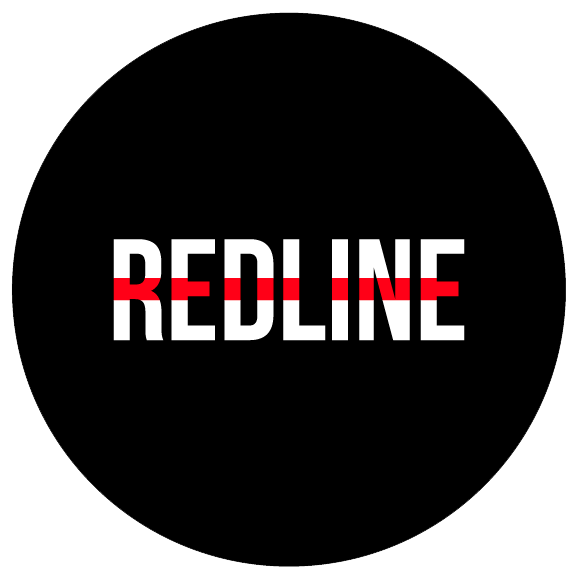

Estudio de Grabación - RedLine
REDLINE es un medio virtual gratuito, fundado en Medellín - Colombia, por jóvenes pertenecientes a diferentes áreas de la cultura y el desarrollo audiovisual, dirigida a crear una comunidad extrovertida y cálida a través de los diferentes canales como: Youtube, nuestra revista digital, eventos, música, televisión, reportajes y documentales.
Nuestra meta es operar alrededor del mundo, registrando temas que involucran los movimientos sociales y retratan las maneras en las que los jóvenes encuentran tanto en la música, como en el arte y las conexiones sociales una posibilidad para narrar su perspectiva del mundo, además, buscamos ser el impulso y la base en la cual nuestro público objetivo logre despegar sus perspectivas y objetivos, es decir, sus sueños, ya que además de ser un medio informativo y audiovisual, brindamos ciertos servicios, especificados a profundidad más adelante.
Lo que pretendemos es ser reconocidos por los contenidos de calidad que ofrecemos, muchas veces polémicos y controversiales, que estén teñidos de un tono irónico y sarcástico intencionado a generar conversación y causar impacto. Temas como el sexo, las drogas, las distintas violencias, el feminismo, la desigualdad y la libertad desde la mirada transversal del arte son los temas que queremos plasmar.
El contenido generado tiende a ser disruptivo, nuestra idea es visibilizar las historias de gente común que atreve a salirse de los estándares monótonos previamente establecidos, y de legitimadores de la escena del arte que por su trayectoria y amplia experiencia deben ser conocidos. Nos interesa cubrir la escena independiente, ser un trampolín para los artistas desconocidos. Nuestro espíritu es irreverente y nuestros comentarios cargados de ironía solo quieren dejar claro lo que se lee entre líneas, siempre respaldados por la rigurosidad del buen periodismo y por los métodos de investigación comprobados por años.

{kind=link}
{kind=link}